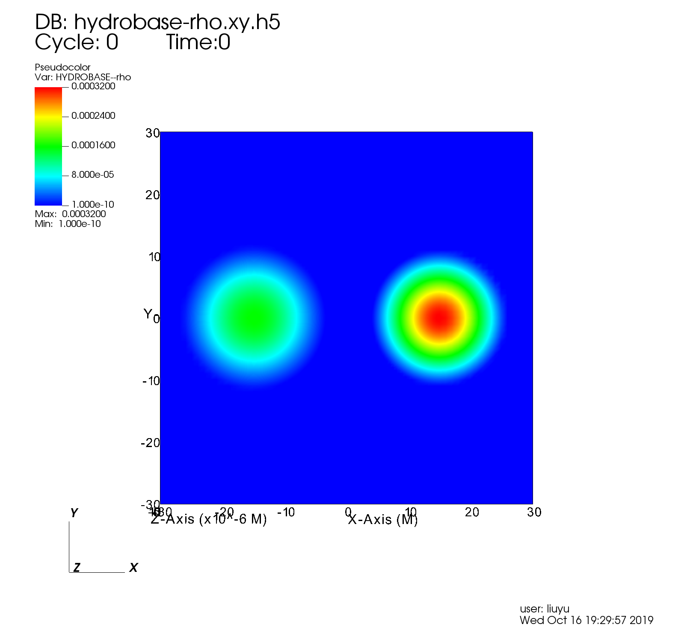

EinsteinInitialData¶
TwoPunctures¶
Create initial for two puncture black holes using a single domain spectral method.
Following York’s conformal-transverse-traceless decomposition method, we make the following assumptions for the metric and the extrinsic curvature
The initial data described by this method are conformally flat and maximally sliced, \(K = 0\). With this ansatz the Hamiltonian constraint yields an equation for the conformal factor \(\psi\)
while the momentum constraint yields an equation for the vector potential \(\boldsymbol{V}\)
Note
TwoPunctures Thorn is restricted to problems involving two punctures.
One can proceed by choosing a non-trivial analytic solution of the Bowen-York type for the momentum constraint,
Hamiltonian constraint is obtained by writing the conformal factor \(\psi\) as a sum of a singular term and a finite correction \(u\)
It is impossible to unambiguously define local black hole masses in general. In the following we choose the ADM mass
Here \(m_{+}\) and \(m_{-}\) are the values of \(u\) at each puncture.
Parameter¶
initial_data
>>> ADMBase::initial_data = "twopunctures" >>> ADMBase::initial_lapse = "twopunctures-averaged" >>> ADMBase::initial_shift = "zero" >>> ADMBase::initial_dtlapse = "zero" >>> ADMBase::initial_dtshift = "zero"
Coordinate of the puncture
>>> TwoPunctures::par_b = 5.0 >>> TwoPunctures::center_offset[0] = -0.538461538462
ADM mass of Black holes
>>> TwoPunctures::target_M_plus = 0.553846153846 >>> TwoPunctures::target_M_minus = 0.446153846154 >>> TwoPunctures::adm_tol = 1.0e-10 INFO (TwoPunctures): Attempting to find bare masses. INFO (TwoPunctures): Target ADM masses: M_p=0.553846 and M_m=0.446154 INFO (TwoPunctures): ADM mass tolerance: 1e-10 INFO (TwoPunctures): Bare masses: mp=1, mm=1 INFO (TwoPunctures): ADM mass error: M_p_err=0.500426421474965, M_m_err=0.607857653302066 . . . INFO (TwoPunctures): Bare masses: mp=0.518419372531011, mm=0.391923877275946 INFO (TwoPunctures): ADM mass error: M_p_err=2.35933494963092e-12, M_m_err=8.5276896655273e-11 INFO (TwoPunctures): Found bare masses. >>> TwoPunctures::target_M_plus = 0.553846153846 >>> TwoPunctures::target_M_minus = 0.446153846154 >>> TwoPunctures::par_m_plus = 0.553846153846 >>> TwoPunctures::par_m_minus = 0.446153846154 >>> TwoPunctures::adm_tol = 1.0e-10 INFO (TwoPunctures): Attempting to find bare masses. INFO (TwoPunctures): Target ADM masses: M_p=0.553846 and M_m=0.446154 INFO (TwoPunctures): ADM mass tolerance: 1e-10 INFO (TwoPunctures): Bare masses: mp=0.553846153846, mm=0.446153846154 INFO (TwoPunctures): ADM mass error: M_p_err=0.0334459078036595, M_m_err=0.0445419016377125 . . . INFO (TwoPunctures): Bare masses: mp=0.518419372531011, mm=0.391923877275946 INFO (TwoPunctures): ADM mass error: M_p_err=2.35933494963092e-12, M_m_err=8.5276896655273e-11 INFO (TwoPunctures): Found bare masses.
momentum of the puncture
>>> TwoPunctures::par_P_plus [1] = +0.3331917498 >>> TwoPunctures::par_P_minus[1] = -0.3331917498
spin of the puncture
>>> TwoPunctures::par_S_plus [1] = 0.0 >>> TwoPunctures::par_S_minus[1] = 0.0
A small number to smooth out singularities at the puncture locations
>>> TwoPunctures::TP_epsilon = 1e-6
Tiny number to avoid nans near or at the pucture locations
>>> TwoPunctures::TP_Tiny = 1.0e-2
Print screen output while solving
>>> TwoPunctures::verbose = yes INFO (TwoPunctures): Bare masses: mp=0.553846153846, mm=0.446153846154 Newton: it=0 |F|=7.738745e-02 bare mass: mp=0.553846 mm=0.446154 bicgstab: itmax 100, tol 7.738745e-05 bicgstab: 0 6.428e-01 bicgstab: 1 1.010e+00 1.021e+00 0.000e+00 6.116e-01 bicgstab: 2 7.551e-02 1.622e+00 1.531e-02 4.085e-01 bicgstab: 3 1.561e-02 2.836e-01 2.396e-02 8.846e-01 bicgstab: 4 7.358e-03 2.473e-01 -1.079e-01 9.778e-01 bicgstab: 5 3.429e-04 9.104e+00 -7.954e-01 4.003e-01 bicgstab: 6 6.564e-05 3.724e-01 -4.164e-01 1.293e+00 Newton: it=1 |F|=1.149396e-03 INFO (TwoPunctures): ADM mass error: M_p_err=0.0334459078036595, M_m_err=0.0445419016377125 >>> TwoPunctures::verbose = no INFO (TwoPunctures): Bare masses: mp=0.553846153846, mm=0.446153846154 INFO (TwoPunctures): ADM mass error: M_p_err=0.0334459078036595, M_m_err=0.0445419016377125
TOVSolver¶
This thorn provides initial data for TOV star(s) in isotropic coordinates. The Tolman-Oppenheimer-Volkoff solution is a static perfect fluid “star”.
Parameter¶
TOV star initial data
>>> ADMBase::initial_data = "tov" >>> ADMBase::initial_lapse = "tov" >>> ADMBase::initial_shift = "tov" >>> ADMBase::initial_dtlapse = "zero" >>> ADMBase::initial_dtshift = "zero"
Set up a TOV star described by a polytropic equation of state \(p=K \rho^{\mathrm{T}}\)
>>> TOVSolver::TOV_Rho_Central[0] = 1.28e-3 >>> TOVSolver::TOV_Gamma = 2.0 >>> TOVSolver::TOV_K = 100.0

Velocity of neutron star
>>> TOVSolver::TOV_Velocity_x[0] = 0.1 >>> TOVSolver::TOV_Velocity_y[0] = 0.2 >>> TOVSolver::TOV_Velocity_z[0] = 0.3
Two or more of TOVs
>>> Tovsolver::TOV_Num_TOVs = 2 >>> Tovsolver::TOV_Num_Radial = 200000 >>> Tovsolver::TOV_Combine_Method = "average" >>> Tovsolver::TOV_Rho_Central[0] = 0.16e-3 >>> Tovsolver::TOV_Position_x[0] = -15.0 >>> Tovsolver::TOV_Rho_Central[1] = 0.32e-3 >>> Tovsolver::TOV_Position_x[1] = 15.0

Exact¶
All of these exact spacetimes have been found useful for testing different aspect of the code.
This thorn sets up the 3+1 ADM variables for any of a number of exact spacetimes/coordinates. Optionally, any 4-metric can be Lorentz-boosted in any direction. As another option, the ADM variables can be calculated on an arbitrary slice through the spacetime, using arbitrary coordinates on the slice.
Parameter¶
The exact solution/coordinates
By default, this thorn sets up the ADM variables on an initial slice only. However, setting ADMBase::evolution_method so you get an exact spacetime, not just a single slice.
>>> ADMBase::evolution_method = "exact"